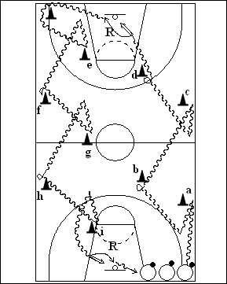

Catégorie : DRIBBLE (Dr-012)
Déroulement
- Tous les joueurs possèdent un ballon à un coin du terrain.
- Chaque joueur effectue le trajet suivant : dribble main droite jusqu’au cône a, back dribble, changement de main et dribble vers le cône b où on réalise un changement de direction au choix (entre les jambes, derrière le dos, etc …); idem vers c (comme vers a), puis d (comme en b), puis lay-up et rebond. Contourner le cône du coin et repartir : d’abord main gauche vers le cône e, back dribble et changement de main pour aller vers f où on effectue un nouveau changement de direction au choix; dribble vers g comme vers e, puis vers h comme vers f. Terminer par le dribble main gauche vers le cône i, back dribble, changement de main et départ rapide en lay-up.
- Rebond du deuxième lay-up et retour dans la file de départ. Chaque joueur part lorsque le précédent franchit la ligne médiane.
Coaching points
- On peut imposer le type de changement de direction, de même qu’on peut demander un jump shoot au lieu d’un lay-up.